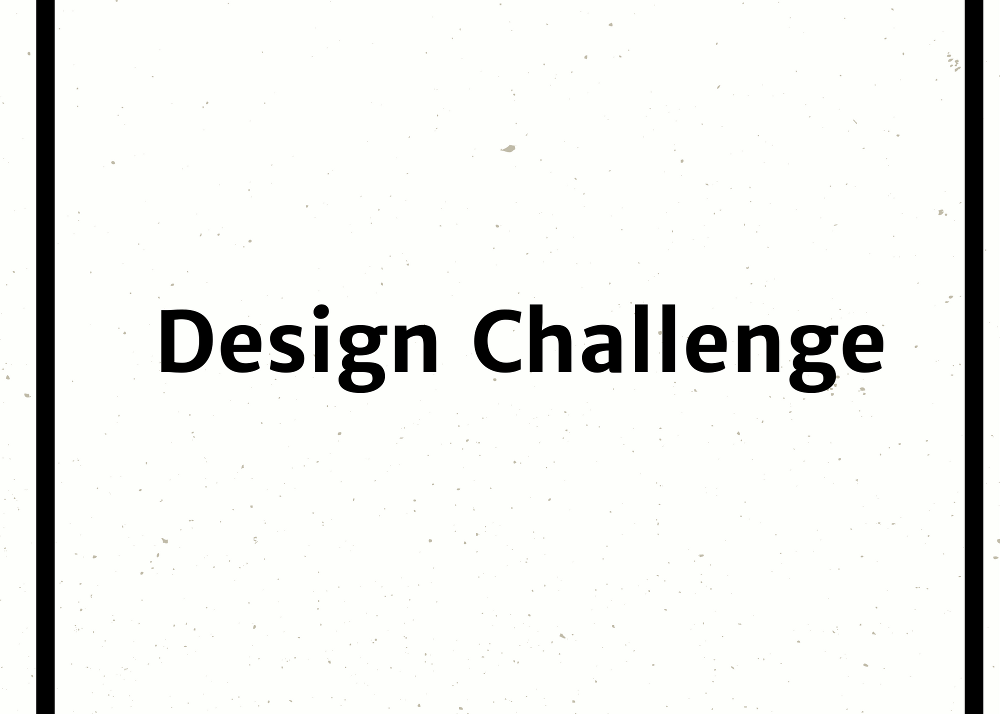

Auntie Sonja Cares provides services for seniors,temporarily disabled and pets.
The original idea for this project came about when I met with a family friend, Sonja Karbo, to talk about her new business. She told that she just started it this year and was doing a variety of services within her local neighborhood. As we discussed her business, it became apparent that Sonja did not have the basic business assets she would need to continue to build her customer base.